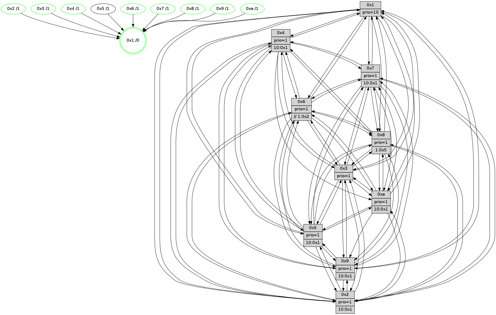

>> << IDX [start] -100 -25 -5 +0 +5 [1635.01221514]
 Previous packets
----------------------------------------------------------------------
1630.283431 beacon01(faad) #0 coord=01,02,03,04,05,06,07,0a,09,08 cycle=688.0ms assoc
-- color-indic=1 64 31 be
1630.293414 beacon02(faad) #0 coord=01,02,03,04,05,06,07,0a,09,08 cycle=688.0ms assoc 64 a2 8f
1630.303413 beacon03(faad) #0 coord=01,02,03,04,05,06,07,0a,09,08 cycle=688.0ms assoc 64 d8 c2
1630.313414 beacon04(faad) #0 coord=01,02,03,04,05,06,07,0a,09,08 cycle=688.0ms assoc 64 af 28
1630.323414 beacon05(faad) #0 coord=01,02,03,04,05,06,07,0a,09,08 cycle=688.0ms assoc 64 d5 65
1630.333414 beacon06(faad) #0 coord=01,02,03,04,05,06,07,0a,09,08 cycle=688.0ms assoc 64 5b b2
1630.343414 beacon07(faad) #0 coord=01,02,03,04,05,06,07,0a,09,08 cycle=688.0ms assoc 64 21 ff
1630.353418 beacon0a(faad) #0 coord=01,02,03,04,05,06,07,0a,09,08 cycle=688.0ms assoc 64 50 f4
1630.373420 beacon08(faad) #0 coord=01,02,03,04,05,06,07,0a,09,08 cycle=688.0ms assoc 64 a4 6e
1630.385322 [Hello(1): seq=948 sym=4,2,9,5,10,3,8,6,7 sysInfo=coloring-mode-on,ColoringModeRequestCalled stat=4:5,11,2,5/2:1,12,0,9/9:3,1,0,7/5:9,3,5,13/10:10,8,8,11/3:14,7,10,15/8:3,4,14,9/6:9,3,2,8/7:10,11,7,5]
1630.393914 [Color(2) seq=599 @0:0 prio=1 >10.@1,1.@3,1.@4,1.@5]
1630.399000 [Hello(3): seq=1039 sym=1,7,6,2,4,8,9,10,5 sysInfo=hasWarning stat=1:15,6,2,0/7:2,10,13,1/6:3,5,1,0/2:9,10,3,0/4:12,6,10,1/8:12,3,0,10/9:9,10,4,5/10:2,2,9,9/5:7,4,14,4]
1630.401824 [Color(3) seq=668 @0:0 prio=1]
1630.405315 [Hello(6): seq=1039 sym=3,2,5,4,7,9,8,10,1 sysInfo=hasWarning stat=3:9,0,4,1/2:6,12,9,3/5:1,3,9,8/4:9,14,2,12/7:5,15,8,2/9:0,1,8,15/8:7,1,11,12/10:8,2,1,2/1:11,3,12,1]
1630.408148 [Color(6) seq=671 @0:0 prio=1 >>1.@2,1.@3,1.@4]
----------------------------------------------------------------------
1631.071561 beacon01(faad) #0 coord=01,02,03,04,05,06,07,0a,09,08 cycle=688.0ms assoc
-- color-indic=1 64 8d bb
1631.081544 beacon02(faad) #0 coord=01,02,03,04,05,06,07,0a,09,08 cycle=688.0ms assoc 64 1e 8a
1631.091544 beacon03(faad) #0 coord=01,02,03,04,05,06,07,0a,09,08 cycle=688.0ms assoc 64 64 c7
1631.101543 beacon04(faad) #0 coord=01,02,03,04,05,06,07,0a,09,08 cycle=688.0ms assoc 64 13 2d
1631.111545 beacon05(faad) #0 coord=01,02,03,04,05,06,07,0a,09,08 cycle=688.0ms assoc 64 69 60
1631.121544 beacon06(faad) #0 coord=01,02,03,04,05,06,07,0a,09,08 cycle=688.0ms assoc 64 e7 b7
1631.131544 beacon07(faad) #0 coord=01,02,03,04,05,06,07,0a,09,08 cycle=688.0ms assoc 64 9d fa
1631.141551 beacon0a(faad) #0 coord=01,02,03,04,05,06,07,0a,09,08 cycle=688.0ms assoc 64 ec f1
1631.161550 beacon08(faad) #0 coord=01,02,03,04,05,06,07,0a,09,08 cycle=688.0ms assoc 64 18 6b
1631.173416 [Hello(8): seq=983 sym=5,2,3,7,9,6,4,10,1 sysInfo=hasWarning stat=5:5,7,13,4/2:9,10,6,0/3:8,4,11,6/7:14,8,12,2/9:10,3,1,10/6:3,2,9,5/4:0,7,5,3/10:3,2,6,8/1:15,13,15,0]
1631.176451 [Hello(4): seq=1039 sym=5,8,6,2,3,9,7,10,1 sysInfo=hasWarning stat=5:15,4,5,6/8:8,12,10,1/6:6,5,1,7/2:7,9,9,5/3:11,11,1,2/9:2,13,6,7/7:11,6,10,3/10:1,7,13,1/1:0,8,11,1]
1631.179286 [Color(4) seq=556 @0:0 prio=1 >10.@1,1.@2,1.@3,1.@5]
1631.181692 [Hello(10): seq=972 sym=6,2,3,8,7,5,9,1 sysInfo=hasWarning stat=6:2,5,6,10/2:8,9,10,4/3:1,13,2,1/8:11,9,11,8/7:9,15,5,2/5:13,1,12,5/9:8,0,5,1/1:13,7,11,1]
1631.184697 [Color(10) seq=616 @0:0 prio=1 >10.@1,1.@5,1.@6,1.@7]
1631.186616 [Hello(7): seq=1039 sym=2,3,5,6,8,4,9,10,1 sysInfo=hasWarning stat=2:12,2,6,8/3:0,9,12,8/5:15,15,3,7/6:11,11,5,2/8:5,15,11,3/4:7,14,8,2/9:1,3,1,1/10:11,5,2,1/1:14,0,10,0]
1631.190714 [Color(7) seq=546 @0:0 prio=1 >10.@1,1.@5,1.@6,1.@8]
1631.201668 [Hello(9): seq=983 sym=2,5,3,4,7,6,8,10,1 sysInfo=hasWarning stat=2:7,5,10,15/5:11,14,14,2/3:7,8,8,8/4:3,4,1,0/7:12,0,5,3/6:5,3,6,6/8:12,15,14,11/10:5,10,2,1/1:7,11,13,1]
1631.206740 [Color(9) seq=565 @0:0 prio=1 >10.@1,1.@5,1.@6,1.@7]
----------------------------------------------------------------------
1631.859692 beacon01(faad) #0 coord=01,02,03,04,05,06,07,0a,09,08 cycle=688.0ms assoc
-- color-indic=1 64 59 8e
1631.869675 beacon02(faad) #0 coord=01,02,03,04,05,06,07,0a,09,08 cycle=688.0ms assoc 64 ca bf
1631.879676 beacon03(faad) #0 coord=01,02,03,04,05,06,07,0a,09,08 cycle=688.0ms assoc 64 b0 f2
1631.889675 beacon04(faad) #0 coord=01,02,03,04,05,06,07,0a,09,08 cycle=688.0ms assoc 64 c7 18
1631.899675 beacon05(faad) #0 coord=01,02,03,04,05,06,07,0a,09,08 cycle=688.0ms assoc 64 bd 55
1631.909677 beacon06(faad) #0 coord=01,02,03,04,05,06,07,0a,09,08 cycle=688.0ms assoc 64 33 82
1631.919675 beacon07(faad) #0 coord=01,02,03,04,05,06,07,0a,09,08 cycle=688.0ms assoc 64 49 cf
1631.929678 beacon0a(faad) #0 coord=01,02,03,04,05,06,07,0a,09,08 cycle=688.0ms assoc 64 38 c4
1631.949680 beacon08(faad) #0 coord=01,02,03,04,05,06,07,0a,09,08 cycle=688.0ms assoc 64 cc 5e
1631.960938 [Hello(1): seq=949 sym=4,2,9,5,10,3,8,6,7 sysInfo=coloring-mode-on,ColoringModeRequestCalled stat=4:5,12,2,5/2:2,13,0,9/9:4,2,0,7/5:9,3,5,13/10:11,9,8,11/3:15,8,10,15/8:4,4,14,9/6:10,4,2,8/7:11,12,7,5]
1631.964371 [Color(8) seq=627 @0:0 prio=1 >1.@5,1.@6,1.@7,1.@9]
1631.966200 [Hello(2): seq=1036 sym=4,5,7,6,3,9,8,10,1 sysInfo=hasWarning stat=4:2,6,3,1/5:3,3,4,5/7:10,15,13,5/6:1,2,0,0/3:0,1,0,0/9:13,2,1,14/8:0,1,14,1/10:12,5,0,0/1:3,0,7,0]
1631.970212 [Hello(3): seq=1040 sym=1,7,6,2,4,8,9,10,5 sysInfo=hasWarning stat=1:0,7,2,0/7:3,11,13,1/6:4,6,1,0/2:9,10,3,0/4:12,7,10,1/8:13,3,0,10/9:10,11,4,5/10:3,3,9,9/5:7,4,14,4]
1631.972800 [Color(2) seq=600 @0:0 prio=1 >10.@1,1.@3,1.@4,1.@5]
1631.974653 [Color(3) seq=669 @0:0 prio=1]
1631.981221 [Hello(5): seq=1040 sym=7,6,4,2,1,9,8,10,3 sysInfo=hasWarning stat=7:7,9,9,3/6:3,12,8,4/4:3,11,11,1/2:0,4,8,2/1:4,10,4,0/9:0,7,5,0/8:1,3,15,10/10:7,6,9,13/3:4,2,10,0]
1631.983918 [Hello(6): seq=1040 sym=3,2,5,4,7,9,8,10,1 sysInfo=hasWarning stat=3:9,0,4,1/2:6,12,9,3/5:1,3,9,8/4:9,15,2,12/7:6,0,8,2/9:1,2,8,15/8:8,1,11,12/10:9,3,1,2/1:12,4,12,1]
1631.987687 [Color(6) seq=672 @0:0 prio=1 >>1.@2,1.@3,1.@4]
----------------------------------------------------------------------
1632.647822 beacon01(faad) #0 coord=01,02,03,04,05,06,07,0a,09,08 cycle=688.0ms assoc
-- color-indic=1 64 e5 8b
1632.657803 beacon02(faad) #0 coord=01,02,03,04,05,06,07,0a,09,08 cycle=688.0ms assoc 64 76 ba
1632.667804 beacon03(faad) #0 coord=01,02,03,04,05,06,07,0a,09,08 cycle=688.0ms assoc 64 0c f7
1632.677805 beacon04(faad) #0 coord=01,02,03,04,05,06,07,0a,09,08 cycle=688.0ms assoc 64 7b 1d
1632.687805 beacon05(faad) #0 coord=01,02,03,04,05,06,07,0a,09,08 cycle=688.0ms assoc 64 01 50
1632.697804 beacon06(faad) #0 coord=01,02,03,04,05,06,07,0a,09,08 cycle=688.0ms assoc 64 8f 87
1632.707806 beacon07(faad) #0 coord=01,02,03,04,05,06,07,0a,09,08 cycle=688.0ms assoc 64 f5 ca
1632.717809 beacon0a(faad) #0 coord=01,02,03,04,05,06,07,0a,09,08 cycle=688.0ms assoc 64 84 c1
1632.737811 beacon08(faad) #0 coord=01,02,03,04,05,06,07,0a,09,08 cycle=688.0ms assoc 64 70 5b
1632.749026 [Hello(8): seq=984 sym=5,2,3,7,9,6,4,10,1 sysInfo=hasWarning stat=5:6,7,13,4/2:10,11,6,0/3:9,5,11,6/7:15,9,12,2/9:11,4,1,10/6:4,3,9,5/4:0,8,5,3/10:4,3,6,8/1:0,14,15,0]
1632.752966 [Hello(10): seq=973 sym=6,2,3,8,7,5,9,1 sysInfo=hasWarning stat=6:3,6,6,10/2:9,10,10,4/3:2,14,2,1/8:12,10,11,8/7:10,0,5,2/5:14,1,12,5/9:9,1,5,1/1:14,7,11,1]
1632.755416 [Hello(4): seq=1040 sym=5,8,6,2,3,9,7,10,1 sysInfo=hasWarning stat=5:0,4,5,6/8:9,13,10,1/6:7,6,1,7/2:8,10,9,5/3:12,12,1,2/9:3,14,6,7/7:12,7,10,3/10:2,8,13,1/1:1,8,11,1]
1632.757858 [Hello(9): seq=984 sym=2,5,3,4,6,8,1 sysInfo=hasWarning stat=2:8,6,10,15/5:12,14,14,2/3:8,9,8,8/4:3,4,1,0/6:6,4,6,6/8:13,0,14,11/1:8,11,13,1]
1632.762326 [Color(9) seq=566 @0:0 prio=1 >10.@1,1.@5,1.@6,1.@7]
1632.765018 [Color(1) seq=720 @0:0 prio=10]
1632.768572 [Color(4) seq=557 @0:0 prio=1 >10.@1,1.@2,1.@3,1.@5]
1632.772380 [Color(10) seq=617 @0:0 prio=1 >10.@1,1.@5,1.@6,1.@7]
1632.774865 [Hello(7): seq=1040 sym=2,3,5,6,8,4,9,10,1 sysInfo=hasWarning stat=2:13,3,6,8/3:1,10,12,8/5:0,15,3,7/6:12,12,5,2/8:6,0,11,3/4:7,14,8,2/9:2,4,1,1/10:11,5,2,1/1:15,0,10,0]
1632.778949 [Color(7) seq=547 @0:0 prio=1 >10.@1,1.@5,1.@6,1.@8]
----------------------------------------------------------------------
1633.435954 beacon01(faad) #0 coord=01,02,03,04,05,06,07,0a,09,08 cycle=688.0ms assoc
-- color-indic=1 64 21 85
1633.445938 beacon02(faad) #0 coord=01,02,03,04,05,06,07,0a,09,08 cycle=688.0ms assoc 64 b2 b4
1633.455938 beacon03(faad) #0 coord=01,02,03,04,05,06,07,0a,09,08 cycle=688.0ms assoc 64 c8 f9
1633.465937 beacon04(faad) #0 coord=01,02,03,04,05,06,07,0a,09,08 cycle=688.0ms assoc 64 bf 13
1633.475937 beacon05(faad) #0 coord=01,02,03,04,05,06,07,0a,09,08 cycle=688.0ms assoc 64 c5 5e
1633.485939 beacon06(faad) #0 coord=01,02,03,04,05,06,07,0a,09,08 cycle=688.0ms assoc 64 4b 89
1633.495938 beacon07(faad) #0 coord=01,02,03,04,05,06,07,0a,09,08 cycle=688.0ms assoc 64 31 c4
1633.505941 beacon0a(faad) #0 coord=01,02,03,04,05,06,07,0a,09,08 cycle=688.0ms assoc 64 40 cf
1633.525941 beacon08(faad) #0 coord=01,02,03,04,05,06,07,0a,09,08 cycle=688.0ms assoc 64 b4 55
1633.538165 [Hello(1): seq=950 sym=4,2,9,5,10,3,8,6,7 sysInfo=coloring-mode-on,ColoringModeRequestCalled stat=4:5,13,2,5/2:3,14,0,9/9:4,2,0,7/5:10,3,5,13/10:11,10,8,11/3:0,9,10,15/8:5,5,14,9/6:11,5,2,8/7:12,13,7,5]
1633.541406 [Hello(5): seq=1041 sym=7,6,4,2,1,9,8,10,3 sysInfo=hasWarning stat=7:8,10,9,3/6:4,13,8,4/4:4,12,11,1/2:0,4,8,2/1:4,11,4,0/9:0,8,5,0/8:2,3,15,10/10:8,7,9,13/3:4,2,10,0]
1633.543903 [STC(8)->1 #0.299 new-neigh,tree-change,inconsistent-stability,stable,to-color d=1]
1633.545564 [Hello(6): seq=1041 sym=3,2,5,4,7,9,8,10,1 sysInfo=hasWarning stat=3:9,0,4,1/2:6,12,9,3/5:1,3,9,8/4:10,0,2,12/7:7,1,8,2/9:1,3,8,15/8:9,2,11,12/10:10,4,1,2/1:13,5,12,1]
1633.548716 [Color(6) seq=673 @0:0 prio=1 >>1.@2,1.@3,1.@4]
1633.550453 [Color(8) seq=628 @0:0 prio=1 >1.@5,1.@6,1.@7,1.@9]
1633.554906 [Hello(3): seq=1041 sym=1,7,6,2,4,8,9,10,5 sysInfo=hasWarning stat=1:1,8,3,0/7:4,12,13,1/6:5,7,1,0/2:9,10,3,0/4:12,8,10,1/8:14,4,0,10/9:11,12,4,5/10:4,4,9,9/5:8,4,14,4]
1633.557713 [STC(3)->1 #0.299 new-neigh,tree-change,inconsistent-stability,stable,to-color d=1]
1633.559677 [TreeStatus(3)-.->1 #0.299 new-neigh,tree-change,inconsistent-stability,stable child=1]
1633.561172 [Color(3) seq=670 @0:0 prio=1]
1633.565934 [Hello(2): seq=1037 sym=4,5,7,6,3,9,8,10,1 sysInfo=hasWarning stat=4:3,7,3,1/5:4,3,4,5/7:11,0,13,5/6:2,3,0,0/3:0,2,0,0/9:13,3,1,14/8:1,1,14,1/10:13,6,0,0/1:4,1,7,0]
1633.569707 [Color(2) seq=601 @0:0 prio=1 >10.@1,1.@3,1.@4,1.@5]
----------------------------------------------------------------------
1634.224083 beacon01(faad) #0 coord=01,02,03,04,05,06,07,0a,09,08 cycle=688.0ms assoc
-- color-indic=1 64 9d 80
1634.234065 beacon02(faad) #0 coord=01,02,03,04,05,06,07,0a,09,08 cycle=688.0ms assoc 64 0e b1
1634.244065 beacon03(faad) #0 coord=01,02,03,04,05,06,07,0a,09,08 cycle=688.0ms assoc 64 74 fc
1634.254066 beacon04(faad) #0 coord=01,02,03,04,05,06,07,0a,09,08 cycle=688.0ms assoc 64 03 16
1634.264066 beacon05(faad) #0 coord=01,02,03,04,05,06,07,0a,09,08 cycle=688.0ms assoc 64 79 5b
1634.274067 beacon06(faad) #0 coord=01,02,03,04,05,06,07,0a,09,08 cycle=688.0ms assoc 64 f7 8c
1634.284066 beacon07(faad) #0 coord=01,02,03,04,05,06,07,0a,09,08 cycle=688.0ms assoc 64 8d c1
1634.294072 beacon0a(faad) #0 coord=01,02,03,04,05,06,07,0a,09,08 cycle=688.0ms assoc 64 fc ca
1634.314071 beacon08(faad) #0 coord=01,02,03,04,05,06,07,0a,09,08 cycle=688.0ms assoc 64 08 50
1634.327211 [Hello(8): seq=985 sym=5,2,3,7,9,6,4,10,1 sysInfo=hasWarning stat=5:6,7,13,4/2:11,12,6,0/3:10,6,12,7/7:0,10,12,2/9:12,5,1,10/6:4,3,9,5/4:0,9,5,3/10:5,4,6,8/1:1,15,0,0]
1634.330576 [Hello(9): seq=985 sym=2,5,3,4,7,6,8,1 sysInfo=hasWarning stat=2:9,7,10,15/5:13,14,14,2/3:9,10,9,9/4:3,5,1,0/7:0,1,0,0/6:7,5,6,6/8:14,1,15,11/1:9,12,13,1]
1634.334541 [Color(1) seq=721 @0:0 prio=10]
1634.338198 [Hello(4): seq=1041 sym=5,8,6,2,3,9,7,10,1 sysInfo=hasWarning stat=5:1,4,5,6/8:10,14,11,1/6:8,7,1,7/2:9,11,9,5/3:13,13,2,3/9:4,14,6,7/7:13,8,10,3/10:2,9,13,1/1:2,8,11,1]
1634.341534 [Color(9) seq=567 @0:0 prio=1 >10.@1,1.@5,1.@6,1.@7]
1634.343765 [Hello(7): seq=1041 sym=2,3,5,6,8,4,9,10,1 sysInfo=hasWarning stat=2:14,4,6,8/3:2,11,13,9/5:1,15,3,7/6:13,13,5,2/8:7,1,12,3/4:7,14,8,2/9:2,4,1,1/10:11,5,2,1/1:0,0,10,0]
1634.348613 [Hello(10): seq=974 sym=6,2,3,8,7,5,9,1 sysInfo=hasWarning stat=6:4,7,6,10/2:10,11,10,4/3:3,15,3,2/8:13,11,12,8/7:11,1,5,2/5:15,1,12,5/9:9,1,5,1/1:15,7,11,1]
1634.351506 [Color(7) seq=548 @0:0 prio=1 >10.@1,1.@5,1.@6,1.@8]
1634.353548 [Color(10) seq=618 @0:0 prio=1 >10.@1,1.@5,1.@6,1.@7]